Nova Sparrow
Ship art direction v2
A continuous fuselage, shaped wings, integrated cockpit and nacelles, and painted white/cobalt surfaces. This page presents the actual local game alongside the separate Blender studies. Fleet work is paused for visual approval.
Production notes, tests and reproduction steps · Editable Blender source · Game-ready GLB
Before / after in Nova Swarm
Unretouched screenshots from the running game at 1920×1080. Menu and hangar use the same camera angle and viewport; gameplay captures show separate live combat moments.
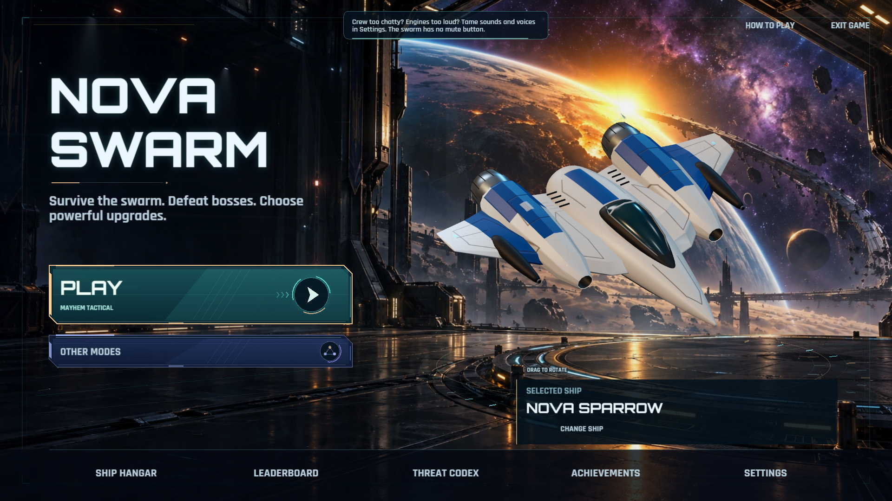
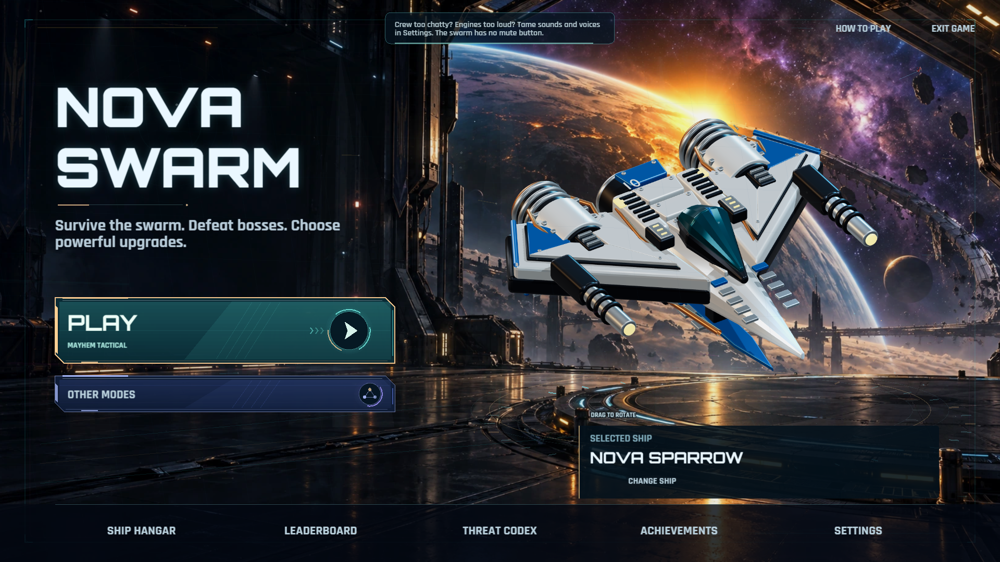
Open full-resolution before · Open full-resolution after


Geometry, independent of materials
Offline Blender clay renders under the same neutral lights, camera and scale. These are not runtime screenshots.

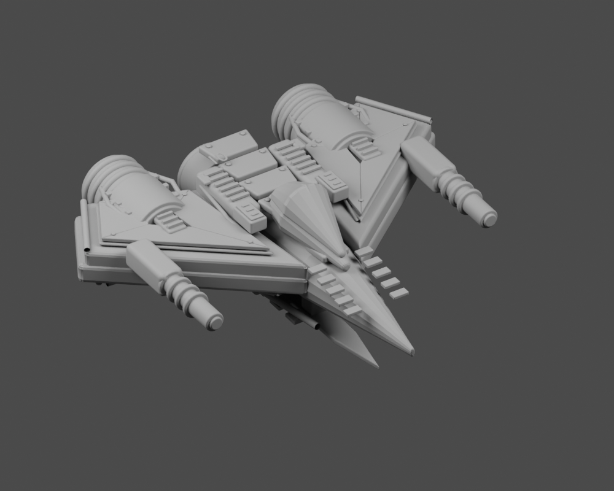

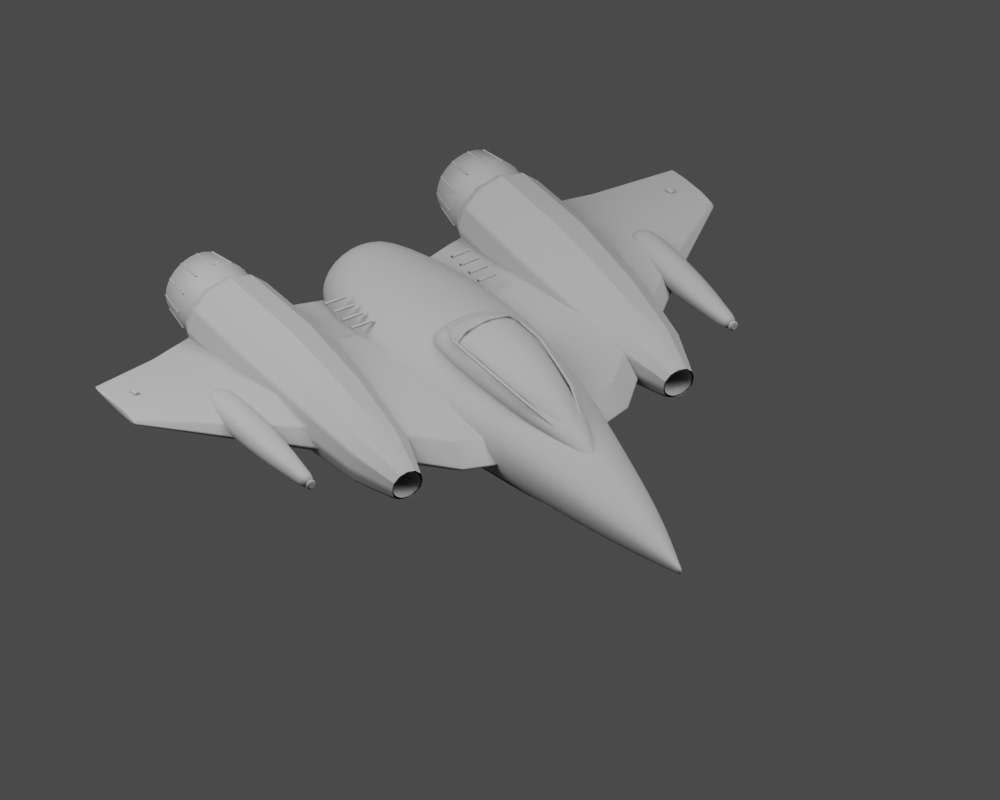
Runtime rotation and transitions
Recorded from Nova Swarm: mouse drag, a complete yaw rotation, side/rear/underside inspection, three selection and menu-return cycles, then combat. The recording is silent and uses scripted QA input.

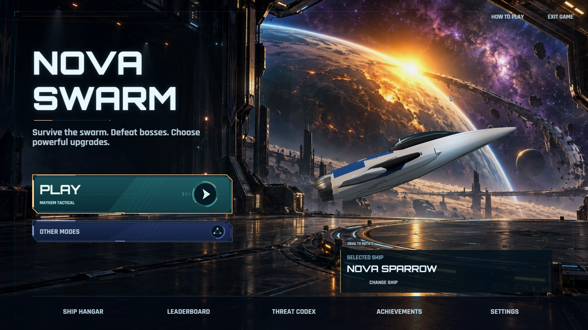

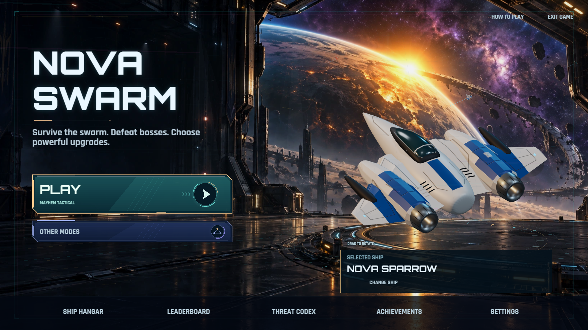

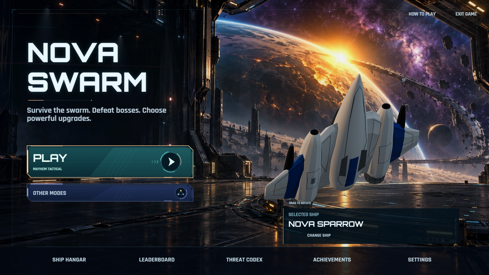
Gameplay size
The exported 512px sprite is displayed here in its measured 74.1 CSS-pixel frame at browser zoom 100%. The visible hull spans about 60.5 pixels. In-game effects and firing origins remain unchanged.
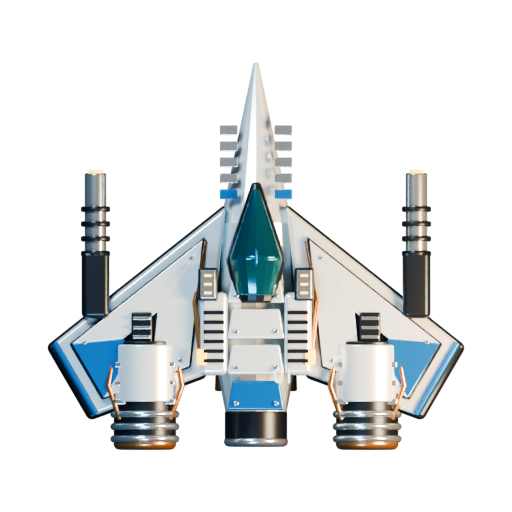
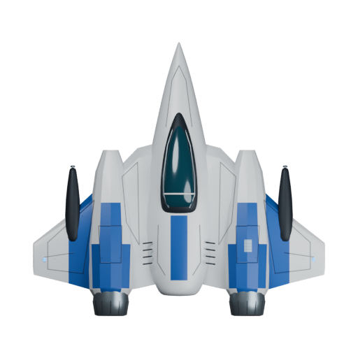
Both images share a 512×512 frame, center (255.5, 255.5), and horizontal opaque bounds 47–464. The new vertical bounds differ by two pixels at each end.
Concept studies — offline blockouts, not final assets
Three local Blender studies preceded the detailed model. The swept interceptor was selected. The initial rounded forms shown here were subsequently revised in clay before surfacing.
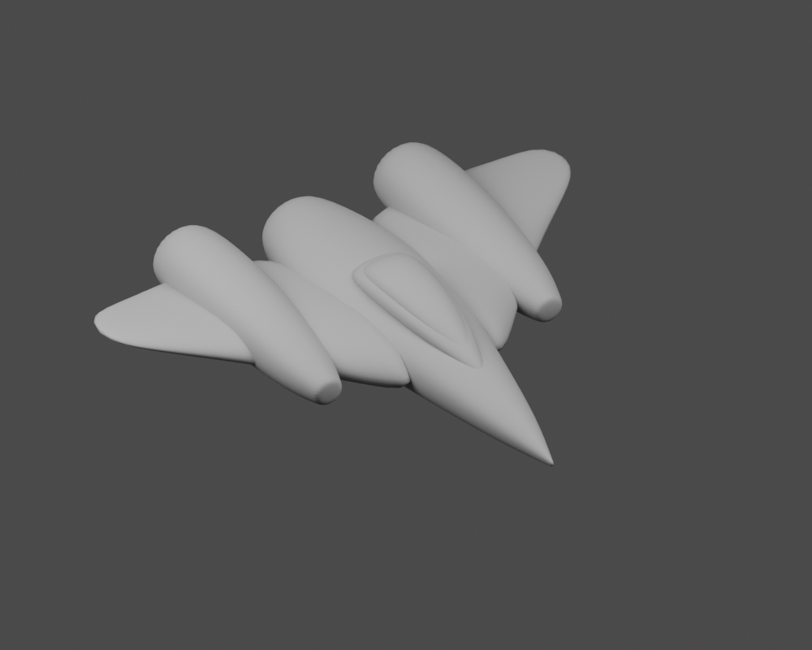
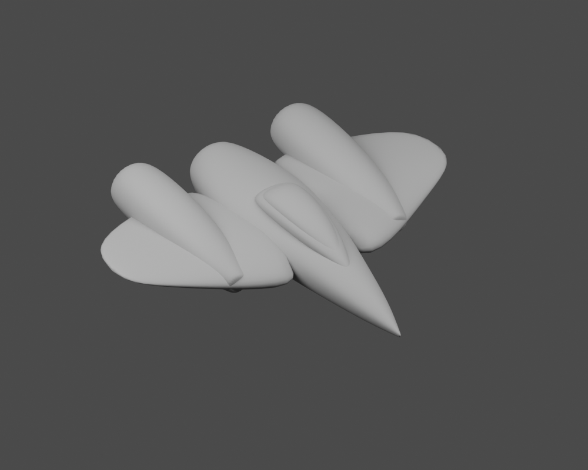
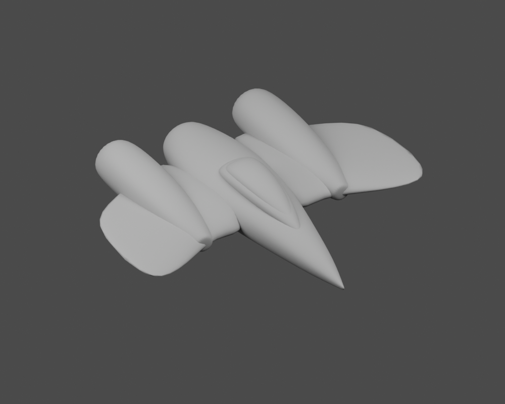
What remains for approval
The new construction removes the conspicuous toy-like collars and blocks. Its finish is deliberately clean, with restrained surface detail. The existing small hangar presentation hides much of that detail; the close menu and full rotation are the better places to judge the model. Whether this direction meets your visual standard remains your decision.
The standard build gate still fails on an unchanged baseline Row Core power-up image (1254px where its validator expects 192px). See the report for separate compilation and runtime results. No Steam build was uploaded, and no Steamworks setting was changed.